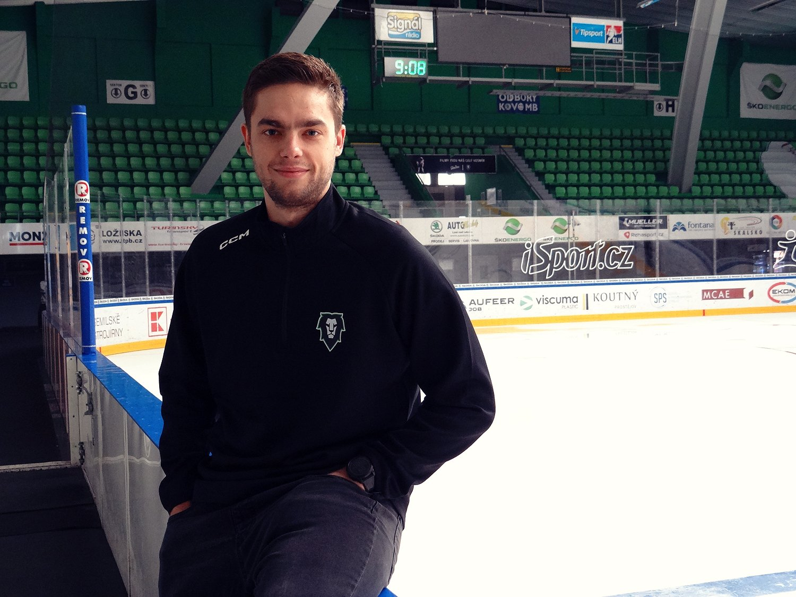
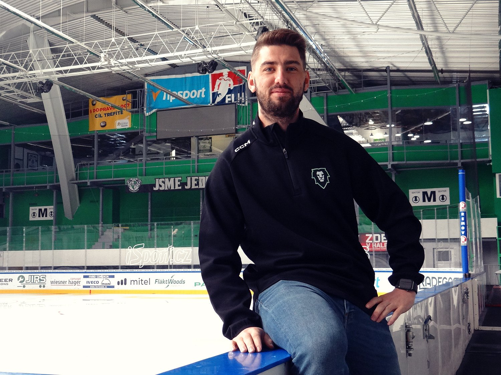
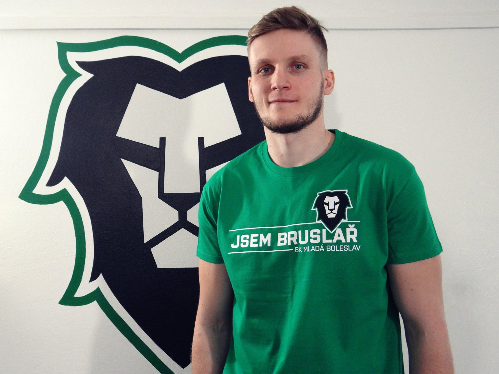

M l. B o l. – Jelikož povinnost informovat o nově příchozích hráčích až prvního května už letos neplatí, zveřejňoval Bruslařský klub některé nováčky už v průběhu dubna. Již nyní tak víte o Filipu Suchém a Jana Štibingerovi, finském útočníkovi Matti Järvinenovi a americkém obránci Zachu Osburnovi. Zapomenout nesmíme ani na oznámení trenérského tria. Prvním květnem pak BK Mladá Boleslav oficiálně hlásí brankáře Jana Růžičku, obránce Filipa Pyrochtu a útočníka Pavola Skalického.
Jan Růžička
Brankáře Jana Růžičku asi netřeba představovat. Mladoboleslavský rodák a odchovanec se do Bruslařského klubu vrací po roční pauze, kterou strávil v barvách Hradce Králové a posléze Pardubic. Předtím působil jen v barvách Boleslavi a v rámci krátkých výpomocí také na Slavii či v Ústí nad Labem. Ještě coby junior absolvoval dva roky v zámořské USHL. Byl členem stříbrného týmu juniorů Bruslařů na jaře 2015.
„Nemá cenu si něco nalhávat, Honza za sebou nemá úplně povedenou sezonu a je si toho dobře vědom i on sám,“ říká na jeho adresu sportovní ředitel Bruslařů Martin Ševc. „Je to ale kluk s výborným charakterem a tím pádem vím, že na tom bude chtít maximálně zamakat a věci změnit. Všichni tady ho dobře známe a víme, že má na mnohem víc. Věříme, že budeme oporou my jemu i on nám,“ dodává.
Filip Pyrochta
Obránce Filip Pyrochta je rodák z Třebíče, odkud se už ale v šestnácti letech přesunul do Liberce, kde strávil všechna svá dorostenecká a juniorská léta. Za jeho A tým ale tak trochu paradoxně nastoupil až po návratu z Kanady, kde odehrál dvě sezony v dresu Victoriaville Tigres a Val-d'Or Foreurs, hrající QMJHL. V Liberci strávil dva ročníky, odkud střídavě pendloval v rámci výpomoci do Benátek nad Jizerou.
V sezoně 2018/2019 se znovu rozhodl zkusit zámoří, v AHL – konkrétně na farmě Nashvillu Milwaukee Admirals – odehrál 30 zápasů, dalších 21 jich přidal v ECHL za tým Atlanta Gladiators. Po roce se opět vracel do Čech, tentokrát do Komety Brno, odkud posléze putoval do Vítkovic. Pro sezonu 2021/2022 se rozhodl znovu zkusit zahraničí, ačkoliv tentokrát Evropu. Za finský klub SaiPa odehrál 43 utkání, v průběhu sezony se pak přesunul do švédského Luleå HF, kde strávil ještě následující ročník a odkud také přichází do Mladé Boleslavi.
„Filip je šikovný a velmi dobře bruslící hokejista,“ říká Martin Ševc k šestadvacetiletému Pyrochtovi. „Myslím, že dvouletá severská štace mu hodně dala, a že si tam zvedl sebevědomí. Možná to úplně nevypadá, ale Filip umí být velmi produktivní a já věřím, že nám hodně pomůže v přesilovkách,“ dodává.
Pavol Skalický
Ani Pavola Skalického asi netřeba nikterak zdlouhavě představovat, neboť ten se do Bruslařského klubu vrací po tříleté odmlce, kterou strávil ve Finsku. Skalický hokejově vyrostl ve slovenské Spišské Nové Vsi, už v devatenácti letech se mohl v dresu Košic radovat z titulu mistra Slovenska. V sezoně 2014/2015 sbíral zkušenosti ve Švédsku, kde naskočil i v tamější nejvyšší soutěži. Po návratu do rodné země zamířil do Slovanu Bratislava, kde působil poslední tři ročníky.
Jak už bylo naznačeno, sezony 2018/2019 a 2019/2020 strávil v Mladé Boleslavi, a kde exceloval v útoku po boku Michala Vondrky, Jakuba Klepiše či Radima Zohorny. Hlavně zmiňovaná druhá sezona pro něj byla výborná, s 18 góly a 27 asistencemi byl nejproduktivnějším hráčem týmu. Neméně úspěšné bylo i jeho působení ve finském Lukko, kam od Bruslařů odešel. Loňskou sezonu strávil v TPS Turku.
„V případě Pavola všichni víme, co čekat a stejně tak on ví, co čekat od nás,“ komentuje Skalického sportovní ředitel Ševc. „Je to charakterově výborný kluk, který je skvěle silově vybaven, což by nám mělo přinést důraz na obou stranách kluziště. A v jeho případě taky samozřejmě počítáme s góly,“ dodává Martin Ševc.
